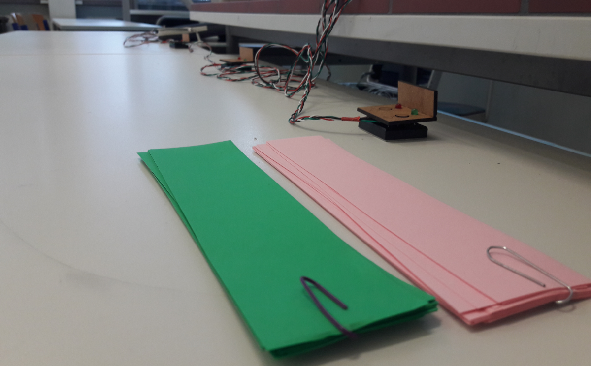

Feedback at School
Summary
The goal of the Seminar, which tasked us to do this project, was to learn using different user centered methods for a design process, rather than having a finished product by the end. I did, for example, a focus group survey and testing among other methods. To learn using these methods, we were tasked to come up with an innovation for schools. I worked on this project without a partner.
My Idea
A former teacher of mine once mentioned, that teachers usually find one concept of teaching for each grade an stick to it. I wondered how an iterative mindset might look like at schools, since not every class is the same. To think iterativly, one must gather feedback. This might be difficult, because students are kind of shy about giving actual feedback when asked directly, at least from my experience. So I got the idea to give the students an opportunity to feed their teacher back anonymously via small devices on their desks during class. The teacher should be able to evaluate their lesson afterwards and iterate on the parts students had trouble with. Ideally students should be able to give qualitative feedback as well, since this kind of feedback is the most valuable. I also considered having a representation of the current mood of the students' understanding during class.
The target audience are students from year 11 and up, since students are the most concerned with understanding the content at that grade.
Testing
In order to test my concept, I got in contact with a teacher at Hans-Baldung-Gymnasium Schwäbisch Gmünd. We agreed on testing my concept in a physics lesson for year 11 students. Four of the students got to test my idea. I prototyped four small devices. They are connected to an Arduino with a wire and send a signal, when someone presses a button. There's one button for positive and one for negative feedback. The students also got visual feedback via a red or green LED when they press a button. I asked the four students to write down a one-sentence reasoning after pressing a button, to gather qualitative feedback as well.

In order to test the teacher's evaluation I set up a Go Pro camera in the back of the classroom. I also prototyped the real time mood display, by putting eight LEDs onto a breadboard. There were eight LEDs in total, four for each colour. Whenever a positive button on the feedback devices is pressed, a green LED lighs up. Contrary feedback is subtracted. A button press controls an LED for five minutes, so the teacher has a chance of seeing the mood reflection.
I programmed the Arduino to send a message to the serial monitor, whenever a button is pressed. The message contains which device the signal came from, what kind of feedback was given and a timestamp of how much time has passed since the program was started.

Evaluation
I visualized the students' feedback as a graph, to reflect the overall mood of the students and show their qualitative feedback, whenever they pressed a button. To help the teacher remember what they said at the time, I used the Go Pro footage as seen in the picture. At the end of the project, I had a feedback session with the teacher. I asked the four students, who tested my concept, to fill in a short written feedback questionnaire, to gather their feedback as well.